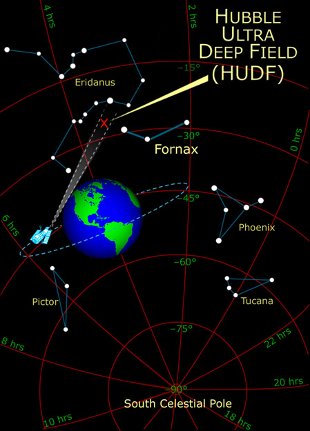

The Hubble Space Telescope "Ultra Deep Field" View


The images above are six segments of the deep field view arranged as a 3x2 matrix with the top image being the 11 element, then in the order 12, 21,22,31,32.
Described as a "million-second-long exposure", the HUDF was taken during 400 orbits of the Hubble Space Telescope. It made 800 exposures over the four month period September 24, 2003 to January 16, 2004. The average exposure time per image was 21 minutes. It detected objects as faint as 30th magnitude. It contains an estimated 10,000 galaxies, but the field of view is so empty that it contains only about seven stars from the Milky Way galaxy. It was taken by the ACS and NICMOS cameras. The above NASA illustration depicts the range of view of some of the galaxies of the ultradeep field as beingin the range of 400 to 700 million years after the big bang, some of the most distant objects ever viewed. The NASA illustration at right shows the location of the view. The location of the image is at right ascension 3h 32m 40.0s, declination -27° 47' 29" (J2000). The image covers 11.5 square arcminutes. One of the NASA comments is that this is about 1 ten millionth of the total sky. It has been compared to looking through an eight-foot-long soda straw. If you assume uniformity, then the number of galaxies projected would be |  |
Hubblesite on HUDF
NASA "Exploring the Universe" page on HUDF.
European Space Agency page on HUDF.
| Classification of galaxies | Star Index |
| Another Hubble deep space view |
Galaxy concepts
| HyperPhysics***** Astrophysics | R Nave |